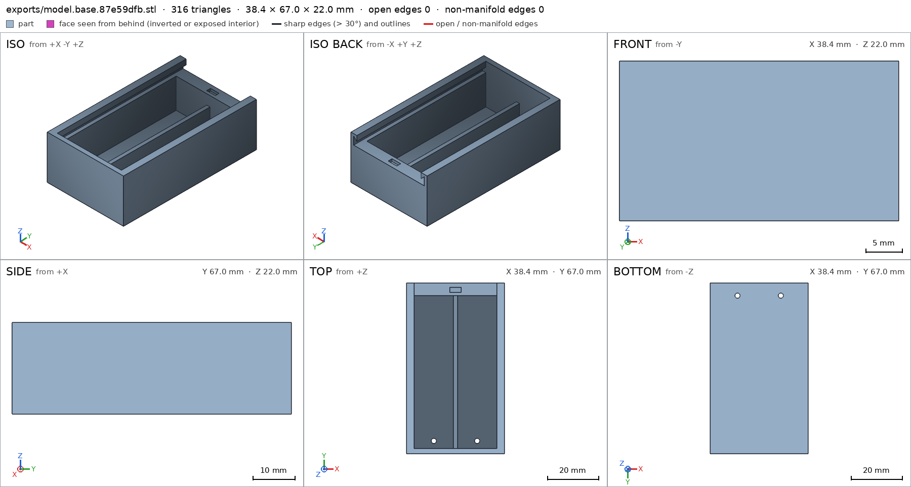
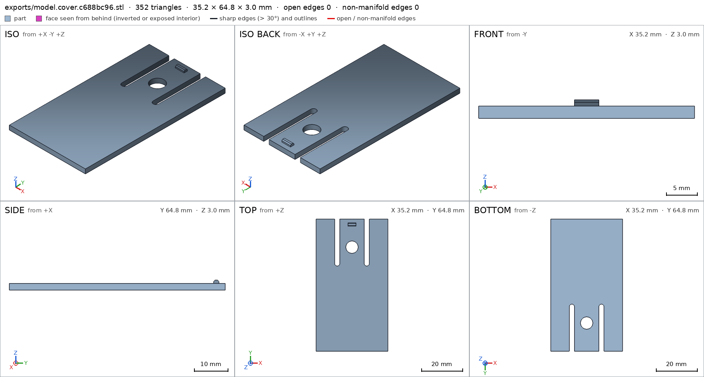
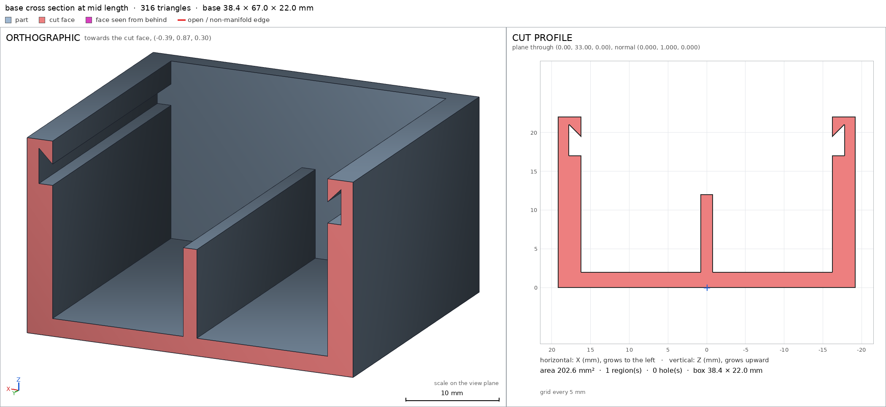
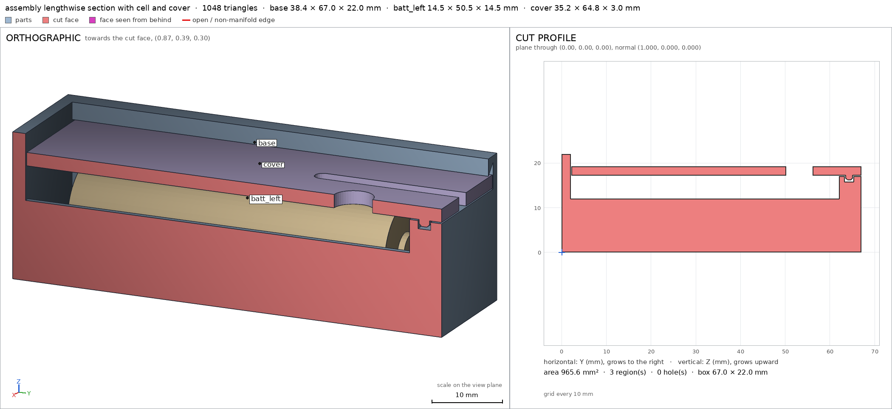
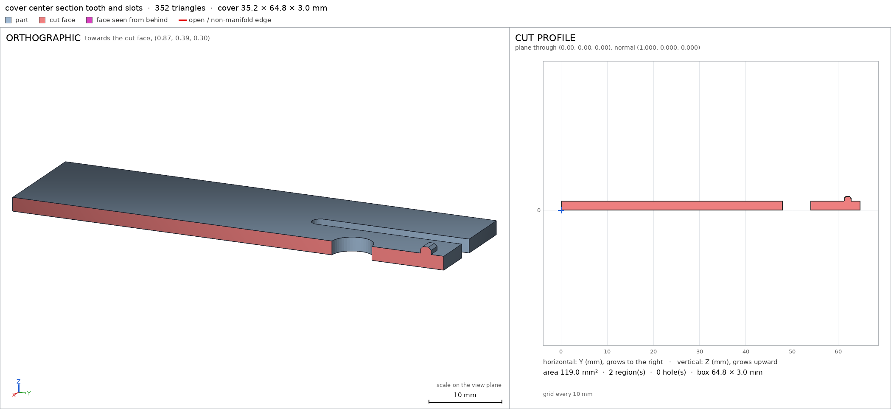
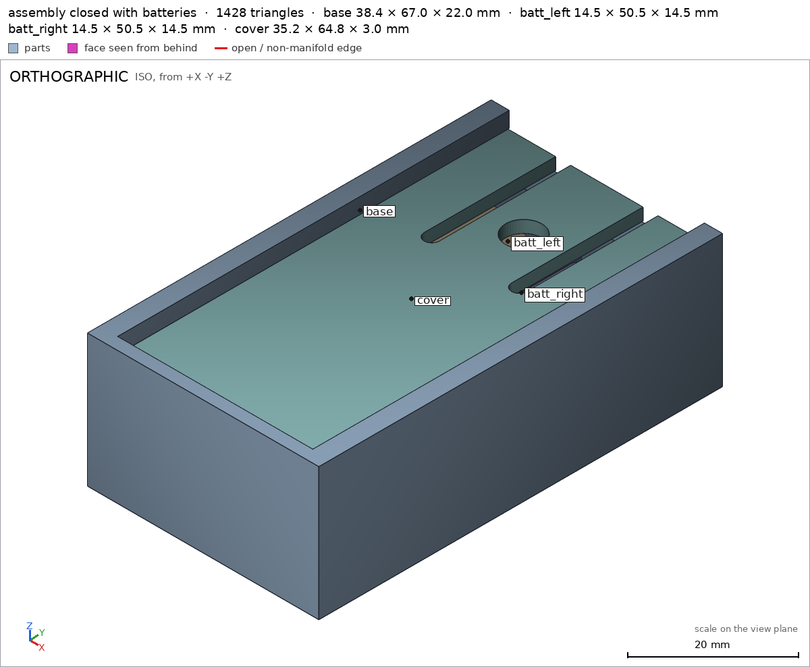

Holder for two AA batteries with a sliding cover
Request
A box that holds two AA batteries side by side (each 14.5 mm across and 50.5 mm long), with a cover that slides off along their length and clicks shut.
- Room at each end for the metal contacts: 3 mm at the positive end and 6 mm at the spring end, and two 2 mm holes for the wires.
- The cover slides in grooves along both sides, and a small flexible catch holds it closed.
- Walls at least 1.2 mm. PLA on a Bambu Lab A1 with a 0.4 mm nozzle, no supports.
- Show the batteries in place in the assembly, so I can see they fit.
Show me the closed holder with the batteries as the assembly, and the cover sliding off as its motion.
Gates at every iteration
| 5 | 10 | 15 | 20 | 25 | 30 | 35 | 40 | 45 | ||||||||||||||||||||||||||||||||||||||
| G1 compiles clean | ||||||||||||||||||||||||||||||||||||||||||||||
| G2 closed meshes | ||||||||||||||||||||||||||||||||||||||||||||||
| G3 assembly | ||||||||||||||||||||||||||||||||||||||||||||||
| G4 motion | ||||||||||||||||||||||||||||||||||||||||||||||
| G5 printable | ||||||||||||||||||||||||||||||||||||||||||||||
| G7 spec held, all seen | ||||||||||||||||||||||||||||||||||||||||||||||
| G8 honest close |
passedfailedpending: G8 is judged when the model closes. One column per iteration; each cell links to it.
Session
- Iteration 1USD 0.005 · 222 s · 23,549 output tokens
Building your sliding AA holder — precise grooves, snap catch, and battery fit.
run_shellexit=0, 0.019 s, stdout 305 B, files +/~/- 0/0/0
- Iteration 2USD 0.000 · 10 s · 127 output tokens
run_shellexit=0, 1.057 s, stdout 464 B, files +/~/- 0/0/0
- Iteration 3USD 0.000 · 6 s · 69 output tokens
run_shellexit=0, 0.005 s, stdout 3043 B, files +/~/- 0/0/0
- Iteration 4USD 0.010 · 430 s · 49,740 output tokens
scad_writemodel.scad: 217 lines
- Iteration 5USD 0.001 · 35 s · 3,707 output tokens
scad_patchmodel.scad line 17: 217 lines
- Iteration 6USD 0.004 · 161 s · 20,144 output tokens
I've worked out the clearances and snap geometry — now cutting the grooves and fitting the cover.
scad_writemodel.scad: 210 lines
- Iteration 7USD 0.001 · 47 s · 4,420 output tokens
scad_compileok=True, 5 echo, 0 warnings, 0 failed asserts, 0 errors
- Iteration 8USD 0.002 · 53 s · 5,322 output tokens
The design compiles clean — now I'll export each part and check printability.
scad_exportok=True, watertight=True, bodies=1, bounds=[[-19.2, 0.0, 0.0], [19.2, 67.0, 22.0]], spec FAILS, sheet renders/sheet-008.png
- Iteration 9USD 0.001 · 16 s · 1,135 output tokens
scad_patchmodel.scad line 163: 210 lines
- Iteration 10USD 0.000 · 5 s · 62 output tokens
scad_exportok=True, watertight=True, bodies=1, bounds=[[-19.2, 0.0, 0.0], [19.2, 67.0, 22.0]], spec ok- spec movedbase: the spec moved toward what the mesh already measured: detail wire_left from [2.0, 2.0] to [2.0], the mesh measures [1.989] (the mesh is the same); detail wire_right from [2.0, 2.0] to [2.0], the mesh measures [1.989] (the mesh is the same); detail wall_end from point [0.0, -1.0, 10.0] to point [8.5, -1.0, 15.0], the mesh measures 2.0 (the mesh is the same). That way those checks pass without the part changing. If the spec was badly posed against the request, that is fine: say so in the close, with the reason (once per part is enough). If not, fix the geometry.
- Iteration 11USD 0.000 · 10 s · 539 output tokens
Base spec is now green — checking the cover and assembly fit.
scad_exportok=True, watertight=True, bodies=1, bounds=[[-17.6, 0.0, 0.0], [17.6, 64.8, 3.0]], spec FAILS, sheet renders/sheet-011.png

scad_export, call 11 - Iteration 12USD 0.000 · 6 s · 195 output tokens
scad_patchmodel.scad line 186: 210 lines
- Iteration 13USD 0.000 · 5 s · 62 output tokens
scad_exportok=True, watertight=True, bodies=1, bounds=[[-17.6, 0.0, 0.0], [17.6, 64.8, 3.0]], spec ok- spec movedcover: the spec moved toward what the mesh already measured: detail finger from [6.0, 6.0] to [6.0], the mesh measures [5.991] (the mesh is the same). That way those checks pass without the part changing. If the spec was badly posed against the request, that is fine: say so in the close, with the reason (once per part is enough). If not, fix the geometry.
- Iteration 14USD 0.000 · 5 s · 56 output tokens
printability_reportzones=2, undeclared=2, fits the bed=True
- Iteration 15USD 0.000 · 11 s · 612 output tokens
Both parts pass their specs — now verifying support-free printing and the assembled fit.
printability_reportzones=0, undeclared=0, fits the bed=True
- Iteration 16USD 0.001 · 42 s · 3,396 output tokens
scad_patchmodel.scad line 69: 214 lines
- Iteration 17USD 0.000 · 7 s · 177 output tokens
scad_patcherror: old appears 2 times in model.scad; it must appear exactly once. Add neighboring lines to make it unique.
- Iteration 18USD 0.000 · 7 s · 109 output tokens
scad_patchmodel.scad line 157: 211 lines
- Iteration 19USD 0.000 · 6 s · 97 output tokens
That edit went wrong — I'll inspect the spec and restore it.
run_shellexit=0, 0.01 s, stdout 3769 B, files +/~/- 0/0/0
- Iteration 20USD 0.000 · 8 s · 283 output tokens
scad_patchmodel.scad line 157: 218 lines
- Iteration 21USD 0.000 · 5 s · 54 output tokens
run_shellexit=0, 0.006 s, stdout 1827 B, files +/~/- 0/0/0
- Iteration 22USD 0.000 · 6 s · 131 output tokens
scad_patchmodel.scad line 156: 217 lines
- Iteration 23USD 0.000 · 5 s · 48 output tokens
scad_compileok=True, 5 echo, 0 warnings, 0 failed asserts, 0 errors
- Iteration 24USD 0.000 · 5 s · 62 output tokens
scad_exportok=True, watertight=False, bodies=2, bounds=[[-19.2, 0.0, 0.0], [19.2, 67.0, 22.0]], spec FAILS, sheet renders/sheet-024.png
- Iteration 25USD 0.002 · 91 s · 6,629 output tokens
The new groove shape broke the mesh — I'll debug the wedge in isolation.
run_shellexit=0, 1.02 s, stdout 328 B, files +/~/- 0/0/0
- Iteration 26USD 0.001 · 67 s · 4,770 output tokens
scad_patchmodel.scad line 74: 217 lines
- Iteration 27USD 0.003 · 3 s · 62 output tokens
scad_exportok=True, watertight=True, bodies=1, bounds=[[-19.2, 0.0, 0.0], [19.2, 67.0, 22.0]], spec ok, sheet renders/sheet-027.png

scad_export, call 27 - Iteration 28USD 0.003 · 11 s · 390 output tokens
Base mesh is fixed and looks right — now checking overhangs and the full assembly.
printability_reportzones=0, undeclared=0, fits the bed=Truescad_exportok=True, watertight=True, bodies=1, bounds=[[-17.6, 0.0, 0.0], [17.6, 64.8, 3.0]], spec ok
- Iteration 29USD 0.002 · 6 s · 48 output tokens
interference_check4 instances, 0 overlaps, G3 0 problems, G4 0, G5 0, 8.64 s
- Iteration 30USD 0.001 · 28 s · 2,246 output tokens
render_viewrenders/view-031.png: iso

render_view, call 31 - Iteration 31USD 0.001 · 20 s · 1,118 output tokens
Closed assembly checks out with batteries fitted — now inspecting sections and snap details.
render_sheetrenders/sheet-032.png, edges={'sharp': 176, 'open': 0, 'nonmanifold': 0}

render_sheet, call 32 - Iteration 32USD 0.000 · 6 s · 52 output tokens
render_sheetrenders/sheet-033.png, edges={'sharp': 190, 'open': 0, 'nonmanifold': 0}

render_sheet, call 33 - Iteration 33USD 0.000 · 8 s · 111 output tokens
render_viewrenders/view-034.png: cut, cut 202.56 mm² 1 regions

render_view, call 34 - Iteration 34USD 0.001 · 6 s · 143 output tokens
render_viewrenders/view-035.png: cut, cut 846.6 mm² 1 regions

render_view, call 35 - Iteration 35USD 0.001 · 7 s · 109 output tokens
render_viewrenders/view-036.png: cut, cut 119.04 mm² 2 regions

render_view, call 36 - Iteration 36USD 0.001 · 29 s · 2,131 output tokens
Sections confirm the batteries, grooves and catch all engage — now finalizing verification.
scad_exportok=True, watertight=True, bodies=1, bounds=[[-19.2, 0.0, 0.0], [19.2, 67.0, 22.0]], spec ok
- Iteration 37USD 0.001 · 7 s · 62 output tokens
scad_exportok=True, watertight=True, bodies=1, bounds=[[-17.6, 0.0, 0.0], [17.6, 64.8, 3.0]], spec ok
- Iteration 38USD 0.000 · 7 s · 113 output tokens
printability_reportzones=0, undeclared=0, fits the bed=Trueprintability_reportzones=0, undeclared=0, fits the bed=True
- Iteration 39USD 0.000 · 6 s · 48 output tokens
interference_check4 instances, 0 overlaps, G3 0 problems, G4 0, G5 0, 7.84 s
- Iteration 40USD 0.000 · 6 s · 119 output tokens
render_viewrenders/view-042.png: iso

render_view, call 42 - Iteration 41USD 0.001 · 32 s · 2,008 output tokensclose refused
Designed and verified: a two-part PLA holder for two side-by-side AA cells with a sliding cover.
Verified:
- Base box 38.4 x 67.0 x 22.0 mm, 1 body, 2 through wire holes, watertight with 0 bad edges base; rests on the bed on 2566.6 mm² base/bed.
- Two empty bays 15.4 mm wide each base/bay_left base/bay_right with a 1.6 mm divider between them base/divider; 6.0 mm spring room at the negative end base/contact_spring and 3.5 mm room at the positive end base/contact_pos; cells (14.5 x 50.5 mm standard parts) drop in from above assembly_order.
- Side grooves 1.6 mm deep with 45° self-supporting ceilings base/groove_left base/groove_right, declared as overhangs covering 11.8% of the part surface; otherwise zero overhangs over 45°, fits the Bambu Lab A1 G5.
- Catch pocket 4.4 x 2.0 x 1.2 mm in the entry wall base/catch_pocket; 2 mm wire holes through the 2 mm floor base/wire_left base/wire_right; walls 3.0 mm sides base/wall_side, 2.0 mm closed end base/wall_end, 2.0 mm floor base/floor.
- Cover plate 35.2 x 64.8 x 2.0 mm plus 1.0 mm tooth, 1 body, 1 finger through-hole, watertight cover, resting on 2138.9 mm² cover/bed; solid sliding plate cover/plate, flexible end tab between two open slots cover/tab cover/slot_left cover/slot_right, catch tooth cover/tooth, 6 mm finger hole cover/finger, 2.0 mm plate cover/plate_thickness; zero overhangs G5.
- Closed assembly 38.4 x 67.0 x 22.0 mm with both standard AA cells fitted, cover strips riding in the grooves with 0.2 mm clearance and 0.7 mm over the cells, one connected group, no overlaps assembly assembly/bed; both cells are capped by the cover and cannot come off straight assembly.
- Cover slides 45 mm along the cells to open slide_off with no collision; the tooth rides over the entry wall with max 0.8 mm flex (allowed 1.0 mm), free at both ends slide_off; assembly builds base, cells from above, then cover slid in from the rear with the same 0.8 mm snap assembly_order.
- Sheets of the final base and cover seen, all assembly instances seen together, and sections/cuts of grooves, tooth, cells and cover fit inspected.
Not verified:
- Whether the 1.0 mm-deep PLA catch snaps repeatedly without creep or fracture, actual sliding friction/clearances on a given printer, and electrical contact/spring fit, which depend on printer, material and hardware.
- Spec adjustments to badly-posed measurements (geometry unchanged): base wire holes base/wire_left base/wire_right declared with mouth diameter only because the through-holes open into the bays so the second depth measured the bay, not the hole; cover finger hole cover/finger likewise mouth-only; base end-wall thickness probe base/wall_end moved to [8.5,-1,15] so it crosses the 2.0 mm end wall instead of firing through the whole 67 mm part.
- G8unsupported claim: flexible end tab between two open slots cover/tab cover/slot_left cover/slot_right: VERIFIED only checks the tab and slot material/void boxes; no bending or flexibility of the tab is measured.
- G8unsupported claim: sections/cuts of grooves, tooth, cells and cover fit inspected: G7 only guarantees the multi-view part sheets, one assembly view, and close views of details of kind view; there are no view-kind details and no sections/cuts are listed.
- Iteration 42USD 0.004 · 16 s · 858 output tokens
Fixing the close wording — re-verifying all gates before closing.
scad_exportok=True, watertight=True, bodies=1, bounds=[[-19.2, 0.0, 0.0], [19.2, 67.0, 22.0]], spec ok
- Iteration 43USD 0.002 · 10 s · 279 output tokens
Re-running the full verification suite to back the corrected close.
scad_exportok=True, watertight=True, bodies=1, bounds=[[-17.6, 0.0, 0.0], [17.6, 64.8, 3.0]], spec ok
- Iteration 44USD 0.000 · 10 s · 164 output tokens
printability_reportzones=0, undeclared=0, fits the bed=Trueprintability_reportzones=0, undeclared=0, fits the bed=Trueinterference_check4 instances, 0 overlaps, G3 0 problems, G4 0, G5 0, 7.86 s
- Iteration 45USD 0.000 · 10 s · 119 output tokens
render_viewrenders/view-048.png: iso

render_view, call 48 - Iteration 46USD 0.001 · 26 s · 2,259 output tokensaccepted
Designed and verified: a two-part PLA holder for two side-by-side AA cells with a sliding cover.
Verified:
- Base box 38.4 x 67.0 x 22.0 mm, 1 body, 2 through wire holes, watertight with 0 bad edges base G2; rests on the bed on 2566.6 mm² base/bed.
- Two empty bays 15.4 mm wide each base/bay_left base/bay_right with a 1.6 mm divider between them base/divider; 6.0 mm spring room at the negative end base/contact_spring and 3.5 mm room at the positive end base/contact_pos; cells (14.5 x 50.5 mm standard parts) drop in from above assembly_order.
- Side grooves 1.6 mm deep with 45 deg self-supporting ceilings base/groove_left base/groove_right, declared as overhangs covering 11.8% of the part surface; otherwise zero overhangs over 45°, fits the Bambu Lab A1 G5.
- Catch pocket 4.4 x 2.0 x 1.2 mm in the entry wall base/catch_pocket; 2 mm wire holes through the 2 mm floor base/wire_left base/wire_right; walls 3.0 mm sides base/wall_side, 2.0 mm closed end base/wall_end, 2.0 mm floor base/floor.
- Cover plate 35.2 x 64.8 x 2.0 mm plus 1.0 mm tooth, 1 body, 1 finger through-hole, watertight cover G2, resting on 2138.9 mm² cover/bed; solid sliding plate cover/plate, end tab between two open slots cover/tab cover/slot_left cover/slot_right, catch tooth cover/tooth, 6 mm finger hole cover/finger, 2.0 mm plate cover/plate_thickness; zero overhangs G5.
- Closed assembly 38.4 x 67.0 x 22.0 mm with both standard AA cells fitted, cover strips riding in the grooves with 0.2 mm clearance and 0.7 mm over the cells, one connected group, no overlaps assembly assembly/bed; both cells are capped by the cover and cannot come off straight assembly.
- Cover slides 45 mm along the cells to open slide_off with no collision; the tooth rides over the entry wall with max 0.8 mm overlap (allowed 1.0 mm), free at both ends slide_off; assembly builds base, cells from above, then cover slid in from the rear with the same 0.8 mm overlap assembly_order.
- Sheets of the final base and cover seen, and one assembly view with all instances together seen G7.
Not verified:
- Whether the end tab bends far enough without breaking, how the slide feels, actual friction and clearances on a given printer, and electrical contact and spring fit, which depend on printer, material and hardware.
- Spec adjustments to badly-posed measurements (geometry unchanged): base wire holes base/wire_left base/wire_right declared with mouth diameter only because the through-holes open into the bays so the second depth measured the bay, not the hole; cover finger hole cover/finger likewise mouth-only; base end-wall thickness probe base/wall_end moved to [8.5,-1,15] so it crosses the 2.0 mm end wall instead of firing through the whole 67 mm part.


Final verification
Source
model.scad
use <cadverify_parts.scad>
// Holder for two AA batteries with a sliding cover.
// Print orientation = exported orientation (+Z up, lowest face on bed, no supports).
part = "assembly"; // [base, cover, assembly]
cadverify_only = "";
module instance(name, part, unit = 1) {
echo(cadverify_instance = [name, part, unit]);
if (cadverify_only == "" || cadverify_only == name) children();
}
// ---------------- parameters ----------------
bay_w = 15.4; // battery bay width (cell 14.5 + clearance)
div_t = 1.6; // centre divider thickness
side_t = 3.0; // side wall thickness (1.4 web outside grooves)
endc_t = 2.0; // closed-end wall thickness
ende_t = 5.0; // entry-end wall thickness (holds catch pocket)
W_in = 2*bay_w + div_t; // 32.4 interior width
W_out = W_in + 2*side_t; // 38.4 outer width
L_in = 60.0; // interior length (50.5 cell + 6 + 3 + 0.5)
L_out = L_in + endc_t + ende_t; // 67.0 outer length
floor_t = 2.0;
wall_top = 22.0; // side / closed-end wall top
gb = 17.0; // groove floor height (0.5 above cell top 16.5)
ce_in = 19.4; // groove ceiling height at inner edge
ce_out = 21.0; // groove ceiling height at outer edge (45 deg slope)
groove_d = 1.6; // groove depth into side wall
groove_y0 = endc_t;
div_h0 = 2.0;
div_h1 = 12.0; // divider top (above cell centre, below cover)
// catch pocket in entry-wall top (closed pocket, >=1.2 webs)
notch_x = 2.2;
notch_y0 = 63.3;
notch_y1 = 65.3;
notch_z0 = 15.8;
notch_zt = 17.0; // entry-wall top
// wire holes through floor at spring end
wire_d = 2.0;
wire_y = 5.0;
// cover, modelled in print orientation (plate on bed, tooth up)
W_cov = W_in + 2*(groove_d - 0.2); // 35.2
L_cov = 64.8; // front 2.2 .. rear 67.0 in assembly
plate_t = 2.0;
tooth_h = 1.0;
slot_x0 = 6.0;
slot_x1 = 8.5;
slot_y0 = 43.0; // slot roots (slots open at rear edge)
finger_d = 6.0;
finger_y = 51.0;
tooth_y0 = 61.3; // tooth base, print coords
tooth_y1 = 62.9;
tooth_x = 2.0; // half width in x
// batteries in assembly
batt_d = 14.5;
batt_len = 50.5;
bx = div_t/2 + bay_w/2; // 8.5 bay centres
batt_y0 = endc_t + 6; // 8.0 negative end (6 mm spring room)
batt_z = floor_t + batt_d/2; // 9.25 axis height
asm_cov_y = 2.2; // cover front in assembly
asm_cov_z = 19.2; // cover top in assembly (plate top)
// ---------------- base ----------------
module groove_void_left() {
x_in = -W_in/2;
x_out = -W_in/2 - groove_d;
y0 = groove_y0;
y1 = L_out + 0.1;
polyhedron(
points = [
[x_in, y0, gb], [x_out, y0, gb],
[x_out, y0, ce_out], [x_in, y0, ce_in],
[x_in, y1, gb], [x_out, y1, gb],
[x_out, y1, ce_out], [x_in, y1, ce_in]
],
faces = [[0,4,5,1],[1,5,6,2],[2,6,7,3],[3,7,4,0],[0,1,2,3],[4,7,6,5]]
);
}
module base() {
difference() {
union() {
// floor
translate([-W_out/2, 0, 0]) cube([W_out, L_out, floor_t]);
// side walls
translate([-W_out/2, 0, floor_t]) cube([side_t, L_out, wall_top - floor_t]);
translate([W_in/2, 0, floor_t]) cube([side_t, L_out, wall_top - floor_t]);
// closed end wall (full height, cover stop)
translate([-W_in/2, 0, floor_t]) cube([W_in, endc_t, wall_top - floor_t]);
// entry end wall (low so cover slides over it)
translate([-W_in/2, L_in + endc_t, floor_t])
cube([W_in, ende_t, notch_zt - floor_t]);
// centre divider rib between cells
translate([-div_t/2, endc_t, div_h0]) cube([div_t, L_in, div_h1 - div_h0]);
}
// sliding grooves with 45 deg self-supporting ceilings, open at entry end
groove_void_left();
mirror([1, 0, 0]) groove_void_left();
// catch pocket (open to top only)
translate([-notch_x, notch_y0, notch_z0])
cube([2*notch_x, notch_y1 - notch_y0, notch_zt - notch_z0 + 0.1]);
// two wire holes through floor
translate([-bx, wire_y, -0.5]) cylinder(d = wire_d, h = floor_t + 1, $fn = 24);
translate([bx, wire_y, -0.5]) cylinder(d = wire_d, h = floor_t + 1, $fn = 24);
}
}
// ---------------- cover ----------------
module cover() {
difference() {
union() {
// sliding plate (side strips ride in the grooves)
translate([-W_cov/2, 0, 0]) cube([W_cov, L_cov, plate_t]);
// catch tooth with 45 deg front/back ramps
hull() {
translate([-tooth_x, tooth_y0, plate_t]) cube([2*tooth_x, tooth_y1 - tooth_y0, 0.6]);
translate([-tooth_x, tooth_y0 + 0.4, plate_t + tooth_h - 0.01])
cube([2*tooth_x, tooth_y1 - tooth_y0 - 0.8, 0.01]);
}
}
// two slots forming the flexible end tab (open at rear edge)
translate([-slot_x1, slot_y0, -0.5]) cube([slot_x1 - slot_x0, L_cov - slot_y0 + 0.6, plate_t + 1]);
translate([slot_x0, slot_y0, -0.5]) cube([slot_x1 - slot_x0, L_cov - slot_y0 + 0.6, plate_t + 1]);
// rounded slot roots
translate([-(slot_x0 + slot_x1)/2, slot_y0, -0.5])
cylinder(d = slot_x1 - slot_x0, h = plate_t + 1, $fn = 24);
translate([(slot_x0 + slot_x1)/2, slot_y0, -0.5])
cylinder(d = slot_x1 - slot_x0, h = plate_t + 1, $fn = 24);
// finger pull hole in the tab
translate([0, finger_y, -0.5]) cylinder(d = finger_d, h = plate_t + 1, $fn = 48);
}
}
// ---------------- assembly (closed, cells fitted) ----------------
module assembly() {
instance("base", "base") translate([0, 0, 0]) base();
instance("batt_left", "standard:aa_cell")
translate([-bx, batt_y0, batt_z]) rotate([-90, 0, 0]) aa_cell();
instance("batt_right", "standard:aa_cell")
translate([bx, batt_y0, batt_z]) rotate([-90, 0, 0]) aa_cell();
instance("cover", "cover")
translate([0, asm_cov_y, asm_cov_z]) rotate([0, 180, 0]) cover();
}
// ---------------- specs + dispatch ----------------
if (part == "base") {
echo(cadverify_spec = [
["bounds", [[-W_out/2, 0, 0], [W_out/2, L_out, wall_top]]],
["bodies", 1],
["through_holes", 2],
["support_faces", [["bed", "-z", 2000]]],
["overhangs_allowed", [
["groove ceilings print as 45 deg chamfers", [[-W_in/2 - groove_d, groove_y0, gb], [-W_in/2, L_out, wall_top]]],
["groove ceilings print as 45 deg chamfers", [[W_in/2, groove_y0, gb], [W_in/2 + groove_d, L_out, wall_top]]]
]],
["copies", 1],
["details", [
["bay_left", "void", [[-W_in/2, endc_t, floor_t], [-div_t/2, endc_t + L_in, floor_t + batt_d]], 0.9],
["bay_right", "void", [[div_t/2, endc_t, floor_t], [W_in/2, endc_t + L_in, floor_t + batt_d]], 0.9],
["contact_spring", "void", [[-W_in/2, endc_t, floor_t], [W_in/2, endc_t + 6, floor_t + batt_d]], 0.9],
["contact_pos", "void", [[-W_in/2, endc_t + L_in - 3.5, floor_t], [W_in/2, endc_t + L_in, floor_t + batt_d]], 0.9],
["groove_left", "void", [[-W_in/2 - groove_d, groove_y0, gb], [-W_in/2, L_out, ce_in]], 0.9],
["groove_right", "void", [[W_in/2, groove_y0, gb], [W_in/2 + groove_d, L_out, ce_in]], 0.9],
["catch_pocket", "void", [[-notch_x, notch_y0, notch_z0], [notch_x, notch_y1, notch_zt]], 0.9],
["wire_left", "hole", [-bx, wire_y, -1], [0, 0, 1], [[0, wire_d]]],
["wire_right", "hole", [bx, wire_y, -1], [0, 0, 1], [[0, wire_d]]],
["wall_side", "thickness", [W_out/2 + 1, 30, 10], [-1, 0, 0], side_t],
["wall_end", "thickness", [8.5, -1, 15], [0, 1, 0], endc_t],
["floor", "thickness", [8, 30, -1], [0, 0, 1], floor_t],
["divider", "material", [[-div_t/2, endc_t, div_h0], [div_t/2, endc_t + L_in, div_h1]], 0.9]
]]
]);
base();
} else if (part == "cover") {
echo(cadverify_spec = [
["bounds", [[-W_cov/2, 0, 0], [W_cov/2, L_cov, plate_t + tooth_h]]],
["bodies", 1],
["through_holes", 1],
["support_faces", [["bed", "-z", 1700]]],
["overhangs_allowed", []],
["copies", 1],
["details", [
["plate", "material", [[-W_cov/2, 0, 0], [W_cov/2, slot_y0, plate_t]], 0.9],
["tab", "material", [[-slot_x0, slot_y0, 0], [slot_x0, L_cov, plate_t]], 0.8],
["tooth", "material", [[-tooth_x, tooth_y0, plate_t], [tooth_x, tooth_y1, plate_t + tooth_h]], 0.7],
["slot_left", "void", [[-slot_x1, slot_y0, 0], [-slot_x0, L_cov, plate_t]], 0.9],
["slot_right", "void", [[slot_x0, slot_y0, 0], [slot_x1, L_cov, plate_t]], 0.9],
["finger", "hole", [0, finger_y, -1], [0, 0, 1], [[0, finger_d]]],
["plate_thickness", "thickness", [10, 10, 5], [0, 0, -1], plate_t]
]]
]);
cover();
} else if (part == "assembly") {
echo(cadverify_spec = [
["bounds", [[-W_out/2, 0, 0], [W_out/2, L_out, wall_top]]],
["support_faces", [["bed", "-z", 2000]]],
["allowed_interferences", []],
["motions", [
["slide_off", ["cover"], "slide", [0, 1, 0], [0, 45],
["flex", [["cover", "base", 1.0, "catch tooth rides over entry wall"]]]]
]],
["assembly_order", [
[["base"], [0, 0, 0]],
[["batt_left"], [0, 0, -1]],
[["batt_right"], [0, 0, -1]],
[["cover"], [0, -1, 0],
["flex", [["cover", "base", 1.0, "catch tooth rides over entry wall"]]]]
]],
["held", ["batt_left", "batt_right"]]
]);
assembly();
}